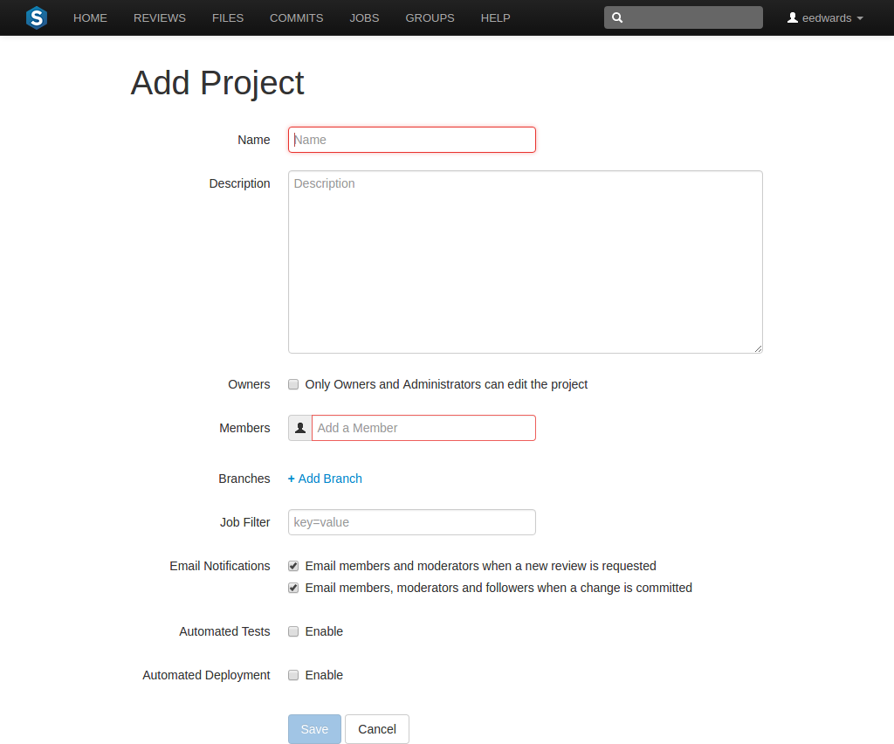
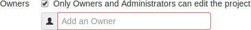
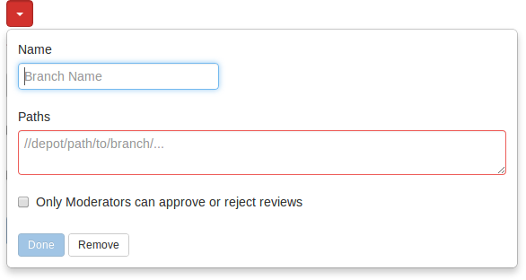
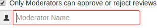
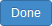
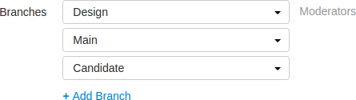
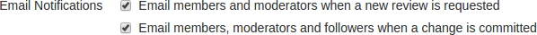
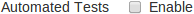
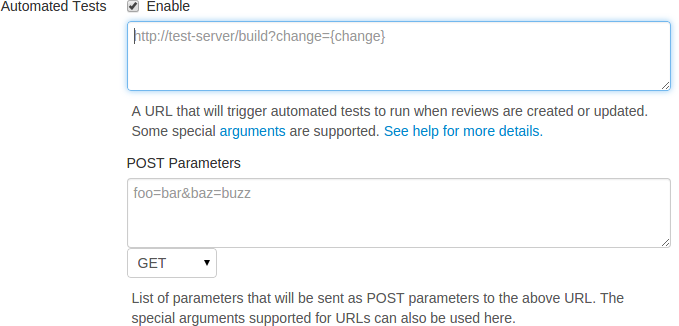

Add a project
-
On the Swarm home page, click the icon at the top-right of the projects sidebar.
Note
The ability to add projects can be limited to administrators only, or limited to members of specific groups. When limited, users who are not administrators, or a member of the specified group, will not see the icon at the top-right of the projects sidebar.
The Add Project page appears:

-
Provide a name for the project.
-
Optionally provide a description.
-
Optionally click the checkbox. When checked, a field is displayed allowing you to add a new owner. The field auto-suggests users within the Helix Versioning Engine as you type.

Once specified, modifying the project's definition is restricted to project owners and administrators (users with admin-level or super-level privileges in the Helix Versioning Engine).
-
Specify at least one team member. This field auto-suggests projects, groups, and users within the Helix Versioning Engine as you type (up to a combined limit of 20 entries).

See Membership for more details.
-
Optionally click the link to display the branch drop-down dialog:

-
Enter a short Name for the branch.
-
Enter one or more branch paths, one per line.
Note
Each branch path should be expressed in depot syntax. Wildcards should not be used; the only exception is that the branch path can end with the Perforce wildcard
...For more information, see Command Reference: File Specifications.
-
Optionally check the checkbox. When checked, a field is displayed allowing you to add a new moderator. The field auto-suggests users within the Helix Versioning Engine as you type.

Once the branch specification is complete and the project has been saved, changing the state of any review associated with this moderated branch is restricted as follows:
-
Only moderators can approve or reject the review. Moderators can also transition a review to any other state.
-
The review's author, when she is not a moderator, can change the review's state to Needs Review, Needs Revision, Archived, and can attach committed changelists.
Normally, the review's author cannot change the review's state to Approved or Rejected on moderated branches. However, authors that are also moderators have moderator privileges, and may approve or reject their own review.
When
disable_self_approveis enabled, authors who are moderators (or even users with admin privileges) cannot approve their own reviews. -
Project members can change the review's state to Needs Review or Needs Revision, and can attach committed changelists. Project members cannot change the review's state to Approved, Rejected, or Archived.
-
Users that are not project members, moderators, or the review's author cannot transition the review's state.
-
For the review's author and project members, if a review is not in one of their permitted states, for example if the review's state is Rejected, they cannot transition the review to another state.
These restrictions have no effect on who can start a review.
-
-
 Click the button to accept your branch specification.
Once the branch definition has completed, if any moderators were specified, the number of moderators for that branch is displayed in the list of branches:

-
-
Optionally specify a job filter. The job filter allows you to specify criteria that are used to associate jobs with projects. For example, entering
Subsystem=ProjectAassociates jobs whose subsystem field is set toProjectAwith the current project.Note
This job filter is simpler than the filters available in other Perforce clients. The filter must be expressed as
field=value -
Optionally disable notification emails for new reviews, or committed reviews. These notifications are enabled by default, but some teams prefer fewer messages in their inboxes. Note that any @mentioned users, or users who are explicitly added to a review or changelist, will receive notifications even if new review/committed review notifications are disabled.

-
 Optionally click the checkbox beside Automated Tests to display the automated tests configuration fields.
 Specify a URL that triggers a test execution. Use the special arguments described in the dialog to help compose a URL that informs your test suite with important details. For more details, see How can I integrate my test suite to inform review acceptance or rejection?.
-
 Optionally click the checkbox beside
Automated Deployment to display the automated
deployment configuration fields:
Optionally click the checkbox beside
Automated Deployment to display the automated
deployment configuration fields:
 Specify a URL that triggers a deployment of the project's code. Use the
special arguments described in the dialog to help compose a URL that
informs your deployment program with important details. For more
details, see How can I automatically deploy code within a review?.
Specify a URL that triggers a deployment of the project's code. Use the
special arguments described in the dialog to help compose a URL that
informs your deployment program with important details. For more
details, see How can I automatically deploy code within a review?.
-
 Click .
Click .
Note
The button is disabled if any required fields are empty.